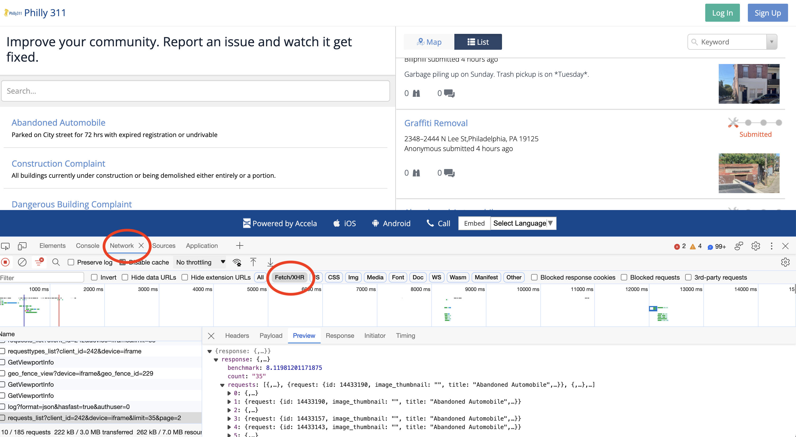

import geopandas as gpd
import holoviews as hv
import hvplot.pandas
import numpy as np
import pandas as pd
import seaborn as sns
from matplotlib import pyplot as plt
import requests
# Show all columns
pd.options.display.max_columns = 999Getting Data: Working with APIs, TEXT analytics & Census
- Natural language processing via Philly’s 311 API
- Word frequencies
- Sentiment analysis
Natural Language Processing and the 311 Request API
We pull data using the API for the Philly 311 system, available at: https://iframe.publicstuff.com/#?client_id=242

Let’s take another look at the address where the site is pulling its data from:
https://vc0.publicstuff.com/api/2.0/requests_list?client_id=242&device=iframe&limit=35&page=1
This is just an API request! It’s an example of a non-public, internal API, but we can reverse-engineer it to extract the data we want!
Break it down into it’s component parts:
- Base URL: https://vc0.publicstuff.com/api/2.0/requests_list
- Query parameters: client_id, device, limit, page
It looks likes “client_id” identifies data for the City of Philadelphia, which is definitely a required parameter. Otherwise, the other parameters seem optional, returning the requests on a certain device and viewing page.
Let’s test it out. We’ll grab 2 requests from the first page:
r = requests.get(
"https://vc0.publicstuff.com/api/2.0/requests_list",
params={"client_id": 242, "page": 1, "limit": 2},
)
json = r.json()
json{'response': {'requests': [{'request': {'id': 16613763,
'image_thumbnail': '',
'title': 'Other',
'description': '',
'status': 'submitted',
'address': '9956 Haldeman Ave, Philadelphia, PA 19115, USA',
'location': '',
'zipcode': None,
'foreign_id': '17469497',
'date_created': 1741639537,
'count_comments': 0,
'count_followers': 0,
'count_supporters': 0,
'lat': 40.0970337,
'lon': -75.0228742,
'user_follows': 0,
'user_comments': 0,
'user_request': 0,
'rank': '1',
'user': 'KENYETTA THOMAS'}},
{'request': {'primary_attachment': {'id': 5377066,
'extension': 'jpg',
'content_type': 'image/jpeg',
'url': 'https://d17aqltn7cihbm.cloudfront.net/uploads/a58453dcf3519f2e61d7eb71bdd0dddd',
'versions': {'small': 'https://d17aqltn7cihbm.cloudfront.net/uploads/small_a58453dcf3519f2e61d7eb71bdd0dddd',
'medium': 'https://d17aqltn7cihbm.cloudfront.net/uploads/medium_a58453dcf3519f2e61d7eb71bdd0dddd',
'large': 'https://d17aqltn7cihbm.cloudfront.net/uploads/large_a58453dcf3519f2e61d7eb71bdd0dddd'}},
'id': 16613760,
'image_thumbnail': 'https://d17aqltn7cihbm.cloudfront.net/uploads/small_a58453dcf3519f2e61d7eb71bdd0dddd',
'title': 'Dangerous Building Complaint',
'description': 'Signage on the verge of falling on pedestrians',
'status': 'submitted',
'address': '2101 S Beechwood St, Philadelphia, PA 19145, USA',
'location': '',
'zipcode': None,
'foreign_id': '17469495',
'date_created': 1741639534,
'count_comments': 0,
'count_followers': 0,
'count_supporters': 0,
'lat': 39.92588753,
'lon': -75.182167813,
'user_follows': 0,
'user_comments': 0,
'user_request': 0,
'rank': '1',
'user': 'jjjjj'}}],
'count': '2',
'benchmark': 16.027112007141113,
'status': {'type': 'success',
'message': 'Success',
'code': 200,
'code_message': 'Ok'}}}Now we need to understand the structure of the response. First, access the list of requests:
request_list = json["response"]["requests"]
request_list[{'request': {'id': 16613763,
'image_thumbnail': '',
'title': 'Other',
'description': '',
'status': 'submitted',
'address': '9956 Haldeman Ave, Philadelphia, PA 19115, USA',
'location': '',
'zipcode': None,
'foreign_id': '17469497',
'date_created': 1741639537,
'count_comments': 0,
'count_followers': 0,
'count_supporters': 0,
'lat': 40.0970337,
'lon': -75.0228742,
'user_follows': 0,
'user_comments': 0,
'user_request': 0,
'rank': '1',
'user': 'KENYETTA THOMAS'}},
{'request': {'primary_attachment': {'id': 5377066,
'extension': 'jpg',
'content_type': 'image/jpeg',
'url': 'https://d17aqltn7cihbm.cloudfront.net/uploads/a58453dcf3519f2e61d7eb71bdd0dddd',
'versions': {'small': 'https://d17aqltn7cihbm.cloudfront.net/uploads/small_a58453dcf3519f2e61d7eb71bdd0dddd',
'medium': 'https://d17aqltn7cihbm.cloudfront.net/uploads/medium_a58453dcf3519f2e61d7eb71bdd0dddd',
'large': 'https://d17aqltn7cihbm.cloudfront.net/uploads/large_a58453dcf3519f2e61d7eb71bdd0dddd'}},
'id': 16613760,
'image_thumbnail': 'https://d17aqltn7cihbm.cloudfront.net/uploads/small_a58453dcf3519f2e61d7eb71bdd0dddd',
'title': 'Dangerous Building Complaint',
'description': 'Signage on the verge of falling on pedestrians',
'status': 'submitted',
'address': '2101 S Beechwood St, Philadelphia, PA 19145, USA',
'location': '',
'zipcode': None,
'foreign_id': '17469495',
'date_created': 1741639534,
'count_comments': 0,
'count_followers': 0,
'count_supporters': 0,
'lat': 39.92588753,
'lon': -75.182167813,
'user_follows': 0,
'user_comments': 0,
'user_request': 0,
'rank': '1',
'user': 'jjjjj'}}]We need to extract out the “request” key of each list entry. Let’s do that and create a DataFrame:
data = pd.DataFrame([r["request"] for r in request_list])
data.head()| id | image_thumbnail | title | description | status | address | location | zipcode | foreign_id | date_created | count_comments | count_followers | count_supporters | lat | lon | user_follows | user_comments | user_request | rank | user | primary_attachment | |
|---|---|---|---|---|---|---|---|---|---|---|---|---|---|---|---|---|---|---|---|---|---|
| 0 | 16613763 | Other | submitted | 9956 Haldeman Ave, Philadelphia, PA 19115, USA | None | 17469497 | 1741639537 | 0 | 0 | 0 | 40.097034 | -75.022874 | 0 | 0 | 0 | 1 | KENYETTA THOMAS | NaN | |||
| 1 | 16613760 | https://d17aqltn7cihbm.cloudfront.net/uploads/... | Dangerous Building Complaint | Signage on the verge of falling on pedestrians | submitted | 2101 S Beechwood St, Philadelphia, PA 19145, USA | None | 17469495 | 1741639534 | 0 | 0 | 0 | 39.925888 | -75.182168 | 0 | 0 | 0 | 1 | jjjjj | {'id': 5377066, 'extension': 'jpg', 'content_t... |
GREAT SUCCESS!! But we want to build up a larger dataset…let’s pull data for the first 3 pages of data. This will take a minute or two…
# Store the data we request
data = []
# Total number of pages
total_pages = 3
# Loop over each page
for page_num in range(1, total_pages + 1):
# Print out the page number
print(f"Getting data for page #{page_num}...")
# Make the request
r = requests.get(
"https://vc0.publicstuff.com/api/2.0/requests_list",
params={
"client_id": 242, # Unique identifier for Philadelphia
"page": page_num, # What page of data to pull
"limit": 200, # How many rows per page
},
)
# Get the json
d = r.json()
# Add the new data to our list and save
data = data + [r["request"] for r in d["response"]["requests"]]
# Create a dataframe
data = pd.DataFrame(data)Getting data for page #1...
Getting data for page #2...
Getting data for page #3...len(data)600data.head(10)| id | image_thumbnail | title | description | status | address | location | zipcode | foreign_id | date_created | count_comments | count_followers | count_supporters | lat | lon | user_follows | user_comments | user_request | rank | user | primary_attachment | |
|---|---|---|---|---|---|---|---|---|---|---|---|---|---|---|---|---|---|---|---|---|---|
| 0 | 16613800 | Abandoned Automobile | No license plate. Car has been parked for more... | submitted | 1801 Poplar St, Philadelphia, PA 19130, USA | None | 17469525 | 1741640012 | 0 | 0 | 0 | 39.971105 | -75.166067 | 0 | 0 | 0 | 1 | NaN | |||
| 1 | 16613795 | Recycling Collection | Our house was skipped for recycling pick up | submitted | 1240 Hemlock Dr, Philadelphia, PA 19116, USA | None | 17469515 | 1741639828 | 0 | 0 | 0 | 40.123736 | -74.998319 | 0 | 0 | 0 | 1 | Erinfurlong5 | NaN | ||
| 2 | 16613763 | Other | submitted | 9956 Haldeman Ave, Philadelphia, PA 19115, USA | None | 17469497 | 1741639537 | 0 | 0 | 0 | 40.097034 | -75.022874 | 0 | 0 | 0 | 1 | KENYETTA THOMAS | NaN | |||
| 3 | 16613760 | https://d17aqltn7cihbm.cloudfront.net/uploads/... | Dangerous Building Complaint | Signage on the verge of falling on pedestrians | submitted | 2101 S Beechwood St, Philadelphia, PA 19145, USA | None | 17469495 | 1741639534 | 0 | 0 | 0 | 39.925888 | -75.182168 | 0 | 0 | 0 | 1 | jjjjj | {'id': 5377066, 'extension': 'jpg', 'content_t... | |
| 4 | 16613739 | https://d17aqltn7cihbm.cloudfront.net/uploads/... | Illegal Dumping | Metal debris piled on sidewalk | submitted | 850 Moyer St,Philadelphia, PA 19125 | Philadelphia, Pennsylvania | 19125 | 17469483 | 1741639328 | 0 | 0 | 0 | 39.973475 | -75.123507 | 0 | 0 | 0 | 1 | D-RUNKLE | {'id': 5377056, 'extension': 'jpg', 'content_t... |
| 5 | 16613732 | Fire Safety Complaint | I live across the street from the small row ho... | submitted | 207 Watkins St,Philadelphia, PA 19148 | Philadelphia, Pennsylvania | 19148 | NaN | 1741639187 | 0 | 0 | 0 | 39.926467 | -75.149833 | 0 | 0 | 0 | 1 | annaboland | NaN | |
| 6 | 16613708 | Dangerous Building Complaint | This property has caught fire sometime last Ju... | submitted | 1234 W Cambria St, Philadelphia, PA 19133, USA | None | 17469466 | 1741638936 | 0 | 0 | 0 | 39.996532 | -75.151186 | 0 | 0 | 0 | 1 | NaN | |||
| 7 | 16613686 | Abandoned Automobile | The car has been parked on the street for abou... | submitted | 2944 Disston St, Philadelphia, PA 19149, USA | None | 17469453 | 1741638728 | 0 | 0 | 0 | 40.037486 | -75.055685 | 0 | 0 | 0 | 1 | NaN | |||
| 8 | 16613661 | https://d17aqltn7cihbm.cloudfront.net/uploads/... | Graffiti Removal Request | None | submitted | 3799 Walnut St,Philadelphia, PA 19104 | Philadelphia, Pennsylvania | 19104 | 17469435 | 1741638445 | 0 | 0 | 0 | 39.953767 | -75.198408 | 0 | 0 | 0 | 1 | {'id': 5377041, 'extension': 'jpg', 'content_t... | |
| 9 | 16613656 | https://d17aqltn7cihbm.cloudfront.net/uploads/... | Abandoned Automobile | Blue Honda Pilot parked in same spot. Has not ... | submitted | 2841 S Beulah St,Philadelphia, PA 19148 | Philadelphia, Pennsylvania | 19148 | 17469432 | 1741638403 | 0 | 0 | 0 | 39.913041 | -75.160781 | 0 | 0 | 0 | 1 | scssd2 | {'id': 5377040, 'extension': 'jpg', 'content_t... |
Let’s focus on the “description” column. This is the narrative text that the user inputs when entering a 311 request, and it is an example of semi-structured data. For the rest of today, we’ll focus on how to extract information from semi-structured data.
Semi-structured data
Data that contains some elements that cannot be easily consumed by computers
Examples: human-readable text, audio, images, etc
Key challenges
- Text mining: analyzing blocks of text to extract the relevant pieces of information
- Natural language processing (NLP): programming computers to process and analyze human languages
- Sentiment analysis: analyzing blocks of text to derive the attitude or emotional state of the person
NB: Twitter is one of the main API examples of semi-structured data, but since Elon Musk overhauled the API access, it‚Äôs become prohibitively expensive to access (RIP üíÄ)
To get started, let’s remove any requests where the description is missing:
data = data.dropna(subset=["description"])
data_final = data.loc[data["description"] != ""]# Strip out spaces and convert to a list
descriptions = data_final["description"].str.strip().tolist()
descriptions[:10]['No license plate. Car has been parked for more than 2 months',
'Our house was skipped for recycling pick up',
'Signage on the verge of falling on pedestrians',
'Metal debris piled on sidewalk',
'I live across the street from the small row home that is inhabited by squatters who have propane tanks all over the living room that I can see as I walk by when they leave their door open. They are drug users so my biggest fear is that they fall asleep or like something on fire and they call an explosion. They also are soliciting sex for drugs out of the home and I have all of this on camera footage not the propane tanks but I can try to get pictures next time The door is open. My biggest fear is I have a teenage daughter and something is going to happen that causes me or my family harm.',
'This property has caught fire sometime last June and was sealed up. Since then an unknown person or persons has taken off the boards and are now trying to live in this property. Can you please put a rush on boarding up this property',
'The car has been parked on the street for about one month. The windows are very dark and it there is the arm of a jacket or sweat jacket hanging from the drivers side door. It seems strange.',
'Blue Honda Pilot parked in same spot. Has not moved for months.',
'Selling refrigerator stoves washer and dryer on side wall of residential neighborhood',
'They did not pick up the trash that was out there since early this morning']Use case #1: calculating word frequencies
An example of text mining
Text mining and dealing with messy data
Some steps to clean up our text data:
- Break strings into words
- Remove capitalization
- Remove stop words
- Remove punctuation
1. Break strings into words
Use the .split() command to break a string into words by splitting on spaces.
example_string = "This is an Example"
example_string.split()['This', 'is', 'an', 'Example']descriptions_words = [desc.split() for desc in descriptions]descriptions_words[0]['No',
'license',
'plate.',
'Car',
'has',
'been',
'parked',
'for',
'more',
'than',
'2',
'months']This is a list of lists, e.g., the first element is a list of words. Let’s flatten this into a list of just words:
descriptions_words_flat = []
for list_of_words in descriptions_words:
for word in list_of_words:
descriptions_words_flat.append(word)descriptions_words_flat[0]'No'len(descriptions_words_flat)115322. Convert all words to lower case
Use .lower() makes all words lower cased
descriptions_words_lower = [word.lower() for word in descriptions_words_flat]descriptions_words_lower[:10]['no',
'license',
'plate.',
'car',
'has',
'been',
'parked',
'for',
'more',
'than']len(descriptions_words_lower)115323. Remove stop words
Common words that do not carry much significance and are often ignored in text analysis.
We can use the nltk package.
The “Natural Language Toolkit” https://www.nltk.org/
Import and download the stop words:
import nltk
nltk.download("stopwords");[nltk_data] Downloading package stopwords to
[nltk_data] /Users/delmelle/nltk_data...
[nltk_data] Unzipping corpora/stopwords.zip.Get the list of common stop words:
stop_words = list(set(nltk.corpus.stopwords.words("english")))
stop_words[:100]['couldn',
'this',
'for',
'if',
"wouldn't",
"shouldn't",
'such',
'a',
"it'd",
'does',
'shan',
"she'll",
"isn't",
'ourselves',
'those',
"weren't",
"we've",
'the',
'isn',
'same',
"you've",
'not',
'out',
'so',
'i',
"needn't",
'did',
'through',
'mustn',
'my',
'no',
'you',
'themselves',
'been',
'nor',
'during',
'by',
"should've",
'off',
'doing',
'ours',
"they'd",
"couldn't",
"that'll",
'whom',
'any',
'own',
'under',
'until',
'yourself',
"won't",
'her',
"i'm",
'as',
"didn't",
"mustn't",
'were',
'all',
"it's",
'who',
"you'll",
"they'll",
'each',
'while',
'itself',
'them',
'can',
'from',
'hadn',
'or',
'am',
"he's",
'its',
"i've",
'needn',
'below',
'is',
"aren't",
'some',
"they're",
'we',
'it',
'only',
'him',
'they',
'weren',
'to',
"haven't",
'above',
'y',
'more',
'before',
'wasn',
'having',
't',
'herself',
'won',
'in',
"we'd",
"it'll"]len(stop_words)
descriptions_no_stop = []
for word in descriptions_words_lower:
if word not in stop_words:
descriptions_no_stop.append(word)descriptions_no_stop = [
word for word in descriptions_words_lower if word not in stop_words
]len(descriptions_no_stop)69764. Remove punctuation
Get the list of common punctuation:
import stringpunctuation = list(string.punctuation)punctuation[:5]['!', '"', '#', '$', '%']Remove punctuation from words:
descriptions_final = []
# Loop over all words
for word in descriptions_no_stop:
# Remove any punctuation from the words
for p in punctuation:
word = word.replace(p, "")
# Save it if the string is not empty
if word != "":
descriptions_final.append(word)Convert to a Dataframe with one column:
words = pd.DataFrame({"words": descriptions_final})words.head()| words | |
|---|---|
| 0 | license |
| 1 | plate |
| 2 | car |
| 3 | parked |
| 4 | 2 |
Calculate the word frequencies
Use a pandas groupby and sort to put in descending order:
N = (
words.groupby("words", as_index=False)
.size()
.sort_values("size", ascending=False, ignore_index=True)
)top15 = N.head(15)
top15| words | size | |
|---|---|---|
| 0 | street | 136 |
| 1 | trash | 71 |
| 2 | people | 54 |
| 3 | tricked | 50 |
| 4 | parked | 47 |
| 5 | block | 46 |
| 6 | car | 45 |
| 7 | please | 42 |
| 8 | months | 40 |
| 9 | property | 39 |
| 10 | side | 38 |
| 11 | place | 34 |
| 12 | sidewalk | 34 |
| 13 | housing | 33 |
| 14 | front | 33 |
Plot the frequencies
Use seaborn to plot our DataFrame of word counts…
fig, ax = plt.subplots(figsize=(7, 7))
# Plot horizontal bar graph
sns.barplot(
y="words",
x="size",
data=top15,
ax=ax,
color="#cc3000",
saturation=1.0,
)
ax.set_title("Most Common Words Found in 311 Requests", fontsize=16);
Takeaway: Philly cares about trash! They don’t call it Filthadelphia for nothing…
Sentiment Analysis
# Data analysis
import geopandas as gpd
import numpy as np
import pandas as pd
# APIs
import requests
# Plotting
import seaborn as sns
from matplotlib import pyplot as plt
import holoviews as hv
import hvplot.pandasN = words.groupby("words", as_index=False).size().sort_values("size", ascending=False, ignore_index=True)The goal
Determine the “sentiment” of every word in the English language
The hard way
Train a machine learning algorithm to classify words as positive vs. negative, given an input training sample of words.
The easy way
Luckily, this is a very common task in NLP and there are several packages available that have done the hard work for you.
They provide out-of-the-box sentiment analysis using pre-trained machine learning algorithms.
The textblob package
First, let’s try out a package called textblob. Textblob can calculate the “polarity” of words, from negative -1 to postive +1.
It’s algorithm is not particularly sophisticated (as we will see). It was trained on IMDB movie reviews and uses a dictionary mapping of adjectives to sentiment values. So, it knows about a set of adjectives and an approximate polarity for those words.
Let’s try it out on the words from the 311 requests
import textblobFirst, copy our “words” dataframe and drop any duplicate words. We’ll try to calculate the sentiment for each word.
sentiment = words.copy().drop_duplicates(subset=['words'])sentiment.head()| words | |
|---|---|
| 0 | license |
| 1 | plate |
| 2 | car |
| 3 | parked |
| 4 | 2 |
Now, create our “text blob” objects:
blobs = [textblob.TextBlob(word) for word in sentiment['words']]Now use the “.polarity” attribute to calculate the sentiment:
sentiment["polarity"] = [blob.polarity for blob in blobs]sentiment.head(10)| words | polarity | |
|---|---|---|
| 0 | license | 0.0 |
| 1 | plate | 0.0 |
| 2 | car | 0.0 |
| 3 | parked | 0.0 |
| 4 | 2 | 0.0 |
| 5 | months | 0.0 |
| 6 | house | 0.0 |
| 7 | skipped | 0.0 |
| 8 | recycling | 0.0 |
| 9 | pick | 0.0 |
Most of these words are zero!
(sentiment['polarity'] == 0).sum()1713len(sentiment)1862Why did this happen?
Because the universe of words that TextBlob knows about is pretty small! Mostly confined to common adjectives/adverbs that appeared in its IMDB review dataset.
Let’s take a look at the words with nonzero polarity:
sentiment_nonzero = sentiment.query("polarity != 0")What are the top 15 most positive words?
sentiment_nonzero.sort_values("polarity", ascending=False, ignore_index=True).head(15)| words | polarity | |
|---|---|---|
| 0 | best | 1.0 |
| 1 | fly | 0.8 |
| 2 | good | 0.7 |
| 3 | hazardous | 0.6 |
| 4 | lmao | 0.6 |
| 5 | safely | 0.5 |
| 6 | safe | 0.5 |
| 7 | sure | 0.5 |
| 8 | mostly | 0.5 |
| 9 | respectful | 0.5 |
| 10 | many | 0.5 |
| 11 | more | 0.5 |
| 12 | latest | 0.5 |
| 13 | healthy | 0.5 |
| 14 | able | 0.5 |
What are the top 15 most negative words?
sentiment_nonzero.sort_values("polarity", ascending=True, ignore_index=True).head(15)| words | polarity | |
|---|---|---|
| 0 | worst | -1.000000 |
| 1 | terrible | -1.000000 |
| 2 | nasty | -1.000000 |
| 3 | disgusting | -1.000000 |
| 4 | base | -0.800000 |
| 5 | sick | -0.714286 |
| 6 | bad | -0.700000 |
| 7 | impossible | -0.666667 |
| 8 | dangerously | -0.600000 |
| 9 | cold | -0.600000 |
| 10 | crazy | -0.600000 |
| 11 | afraid | -0.600000 |
| 12 | dangerous | -0.600000 |
| 13 | stinks | -0.600000 |
| 14 | dirty | -0.600000 |
What about a histogram of the sentiment?
# create a figure and axes
fig, ax = plt.subplots(figsize=(8, 4.5))
# histogram
ax.hist(sentiment_nonzero["polarity"], bins="auto")
ax.axvline(x=0, c="k", lw=2)
# format
ax.set_xlabel("Polarity")
ax.set_title("Polarity of 311 Request Words", fontsize=16);Hmm…this is surprising! There are many more positive words than I would have guessed!
What could be going on?
Most of the 311 requests are in fact very negative. They are mostly complaints, after all.
In the previous analysis, TextBlob only knows the sentiment for a small subset of the words. This is makes it difficult to produce a comprehensive sentiment for the entirety of the text for each 311 request. This is difficult because context really matters! Let’s see an example:
As you can see in the below example, the negation is not picked up by the algorithm:
textblob.TextBlob("Philly 311 is the best").polarity1.0textblob.TextBlob("Philly 311 is NOT the best").polarity1.0Both are marked as positive! (because of the word “best”)
Can we do better? YES!
The transformers package
The Hugging Face transformers package (documentation) provides access to state-of-the-art, pre-trained machine learning algorithms for natural language processing.
It provides access to more sophisticated machine learning models that are capable of measuring the sentiment of a piece of text using the full context of the words.
We can use the transformers pipeline() function to load and run our pre-trained models
from transformers import pipelinePositive/Negative sentiment analysis
We’ll start with a version of the DistilBERT model that has been fine-tuned on the Stanford Sentiment Treebank dataset.
For an input series of text, this model will predict the POSITIVE / NEGATIVE labels with associated confidence scores. It will tell us how likely it thinks the text is positive or negative.
Tip
For more info on sentiment analysis with the transformers package, check out this tutorial.
# The name of the model we are using
model = "distilbert-base-uncased-finetuned-sst-2-english"
# Initialize our sentiment analyzer
sentiment_classifier = pipeline(
task="sentiment-analysis", # The task we are doing
model=model, # The specific model name
top_k=None, # Predict all labels, not just top ones
tokenizer=model, # Tokenize inputs using model tokenizer
truncation=True, # Truncate text if we need to
)/Users/delmelle/miniforge3/lib/python3.10/site-packages/huggingface_hub/file_download.py:1132: FutureWarning: `resume_download` is deprecated and will be removed in version 1.0.0. Downloads always resume when possible. If you want to force a new download, use `force_download=True`.
warnings.warn(Now, let’s pass our original list of request descriptions to the classifier.
Note
We don’t need to do any text pre-processing here! We’ll just pass in the raw text, so no need to remove stop words, punctuation, etc.
We’re now running a much more sophisticated model, so it will take more time to execute! This will likely take 2-3 minutes to run…
%%time
scores = sentiment_classifier(descriptions)CPU times: user 1min 10s, sys: 1.72 s, total: 1min 12s
Wall time: 10.3 sWhat does the response structure look like?
For each description, we get a dictionary containing the label (POSITIVE or NEGATIVE) and the associated score:
scores[:10][[{'label': 'NEGATIVE', 'score': 0.9968447685241699},
{'label': 'POSITIVE', 'score': 0.003155315760523081}],
[{'label': 'NEGATIVE', 'score': 0.9995304346084595},
{'label': 'POSITIVE', 'score': 0.0004696148680523038}],
[{'label': 'NEGATIVE', 'score': 0.9974465370178223},
{'label': 'POSITIVE', 'score': 0.0025534331798553467}],
[{'label': 'NEGATIVE', 'score': 0.9981185793876648},
{'label': 'POSITIVE', 'score': 0.001881344011053443}],
[{'label': 'NEGATIVE', 'score': 0.9982715845108032},
{'label': 'POSITIVE', 'score': 0.0017284060595557094}],
[{'label': 'NEGATIVE', 'score': 0.9951809644699097},
{'label': 'POSITIVE', 'score': 0.004819096997380257}],
[{'label': 'NEGATIVE', 'score': 0.9953938722610474},
{'label': 'POSITIVE', 'score': 0.0046060942113399506}],
[{'label': 'NEGATIVE', 'score': 0.9963836669921875},
{'label': 'POSITIVE', 'score': 0.0036162862088531256}],
[{'label': 'NEGATIVE', 'score': 0.6846440434455872},
{'label': 'POSITIVE', 'score': 0.31535595655441284}],
[{'label': 'NEGATIVE', 'score': 0.9932594895362854},
{'label': 'POSITIVE', 'score': 0.006740528624504805}]]Let’s unpack this to a more useful format:
yes_no = pd.DataFrame([{d["label"]: d["score"] for d in dd} for dd in scores]).assign(
text=descriptions
)yes_no.head()0 No license plate. Car has been parked for more...
1 Our house was skipped for recycling pick up
2 Signage on the verge of falling on pedestrians
3 Metal debris piled on sidewalk
4 I live across the street from the small row ho...
Name: text, dtype: objectNote: The scores summed across both labels will sum up to 1.
Total sentiment calculation: We can calculate the overall score by multiplying the value for each label, e.g., (POSITIVE = +1 and NEGATIVE = -1) by the confidence score for each label. This gives an overall sentiment estimate for each piece of text:
yes_no["sentiment"] = (yes_no["POSITIVE"] * +1) + (yes_no["NEGATIVE"] * -1)yes_no.head()| NEGATIVE | POSITIVE | text | sentiment | |
|---|---|---|---|---|
| 0 | 0.996845 | 0.003155 | No license plate. Car has been parked for more... | -0.993689 |
| 1 | 0.999530 | 0.000470 | Our house was skipped for recycling pick up | -0.999061 |
| 2 | 0.997447 | 0.002553 | Signage on the verge of falling on pedestrians | -0.994893 |
| 3 | 0.998119 | 0.001881 | Metal debris piled on sidewalk | -0.996237 |
| 4 | 0.998272 | 0.001728 | I live across the street from the small row ho... | -0.996543 |
Question: Are most of the reviews positive or negative?
Let’s take a look at the mean and median:
yes_no['sentiment'].mean()-0.8349780015063472yes_no['sentiment'].median()-0.9954100323375314Ah! By far, most of these are negative!
Philadelphians using the 311 system appear to be very upset.
Let’s take a look at the overall histogram of sentiment too:
# Create a figure and axes
fig, ax = plt.subplots(figsize=(8, 4.5))
# Histogram
ax.hist(yes_no['sentiment'], bins="auto")
ax.axvline(x=0, c="k", lw=2)
# Format
ax.set_xlabel("Polarity")
ax.set_title("Polarity of 311 Requests", fontsize=16);Whoa! Very negative sentiment!
This makes much more sense than our earlier results with the Textblob package.
Let’s look at the 10 requests with the lowest sentiment scores:
yes_no.sort_values("sentiment", ascending=True).head(10)| NEGATIVE | POSITIVE | text | sentiment | |
|---|---|---|---|---|
| 339 | 0.999801 | 0.000199 | Looks like a sink hole | -0.999602 |
| 26 | 0.999796 | 0.000204 | The car has been sitting in front of my house ... | -0.999593 |
| 191 | 0.999795 | 0.000205 | A large service ditch in the left driving lane... | -0.999590 |
| 425 | 0.999792 | 0.000208 | Large sink hole at the stop sign | -0.999585 |
| 305 | 0.999790 | 0.000210 | Abandoned by local park over 6mo. All tires flat | -0.999581 |
| 78 | 0.999778 | 0.000222 | Pothole is getting worse . | -0.999556 |
| 226 | 0.999775 | 0.000225 | gray Ford Fusion appears disabled parked in th... | -0.999550 |
| 277 | 0.999774 | 0.000226 | There are three inlets on the 2100 block of E ... | -0.999548 |
| 217 | 0.999767 | 0.000233 | The oversized large indented hole is in front ... | -0.999535 |
| 219 | 0.999766 | 0.000234 | Random assortment of dumped items. Started wit... | -0.999532 |
And the 10 requests with the highest sentiment:
yes_no.sort_values("sentiment", ascending=False).head(10)| NEGATIVE | POSITIVE | text | sentiment | |
|---|---|---|---|---|
| 276 | 0.000185 | 0.999815 | Murphy Recreation Center rear wall. Thank you. | 0.999631 |
| 373 | 0.000289 | 0.999711 | Graffiti on sign. Please and thank you! | 0.999422 |
| 153 | 0.000361 | 0.999639 | Graffiti and stickers on parking sign pole. Pl... | 0.999278 |
| 246 | 0.000832 | 0.999168 | Again!!! | 0.998336 |
| 214 | 0.004345 | 0.995655 | street light out | 0.991310 |
| 141 | 0.005592 | 0.994408 | School district of Philadelphia | 0.988816 |
| 44 | 0.005714 | 0.994286 | Unleveled sidewalk where water collects/pools ... | 0.988572 |
| 181 | 0.007140 | 0.992860 | Please help and correct for all my neighbors s... | 0.985720 |
| 449 | 0.010813 | 0.989187 | Please pick up or remove this illegal dumping ... | 0.978373 |
| 204 | 0.011188 | 0.988812 | Capri restaurant building a new structure | 0.977624 |
Takeaway
The model is still clearly focusing on some crucial words (please, thank you = “positive”) but overall, doing a much, much better job overall of understanding the full context of the text.
Emotion sentiment analysis
The transformers package also includes pre-trained models that can predict emotion labels.
As an example, let’s try out this version of the DistilBERT model that can predict the following labels for a string of text: anger, fear, sadness, joy, love, and surprise.
# The model
model = "bhadresh-savani/distilbert-base-uncased-emotion"
# Initialize our sentiment analyzer
emotion_classifier = pipeline(
task="text-classification", # The task we are doing
model=model, # The specific model name
top_k=None, # Predict all labels, not just top ones
tokenizer=model, # Tokenize inputs using model tokenizer
truncation=True, # Truncate text if we need to
)/Users/delmelle/miniforge3/lib/python3.10/site-packages/huggingface_hub/file_download.py:1132: FutureWarning: `resume_download` is deprecated and will be removed in version 1.0.0. Downloads always resume when possible. If you want to force a new download, use `force_download=True`.
warnings.warn(Classify the 311 descriptions using our emotions model. Once again, this will likely take 2-3 minutes to run:
%%time
emotion_scores = emotion_classifier(descriptions)CPU times: user 1min 8s, sys: 1.22 s, total: 1min 9s
Wall time: 8.75 semotion_scores[0][{'label': 'fear', 'score': 0.7331622242927551},
{'label': 'anger', 'score': 0.23640018701553345},
{'label': 'sadness', 'score': 0.013925026170909405},
{'label': 'joy', 'score': 0.013106637634336948},
{'label': 'surprise', 'score': 0.0023219578433781862},
{'label': 'love', 'score': 0.0010839784517884254}]Unpack the label/score combos into a DataFrame:
emotion = pd.DataFrame(
[{d["label"]: d["score"] for d in dd} for dd in emotion_scores]
).assign(text=descriptions)emotion.head()| fear | anger | sadness | joy | surprise | love | text | |
|---|---|---|---|---|---|---|---|
| 0 | 0.733162 | 0.236400 | 0.013925 | 0.013107 | 0.002322 | 0.001084 | No license plate. Car has been parked for more than 2 months |
| 1 | 0.026432 | 0.805123 | 0.145952 | 0.019186 | 0.002276 | 0.001031 | Our house was skipped for recycling pick up |
| 2 | 0.982022 | 0.011605 | 0.003893 | 0.001234 | 0.001005 | 0.000241 | Signage on the verge of falling on pedestrians |
| 3 | 0.925558 | 0.047537 | 0.017832 | 0.003040 | 0.005226 | 0.000807 | Metal debris piled on sidewalk |
| 4 | 0.991878 | 0.004407 | 0.002045 | 0.000935 | 0.000492 | 0.000243 | I live across the street from the small row home that is inhabited by squatters who have propane tanks all over the living room that I can see as I walk by when they leave their door open. They are drug users so my biggest fear is that they fall asleep or like something on fire and they call an explosion. They also are soliciting sex for drugs out of the home and I have all of this on camera footage not the propane tanks but I can try to get pictures next time The door is open. My biggest fear is I have a teenage daughter and something is going to happen that causes me or my family harm. |
Now, let’s calculate the predicted label for each text. This is the label with the highest score for each text.
emotion_labels = ["anger", "fear", "sadness", "joy", "surprise", "love"]Use the idxmax() function to find the column with the maximum value for each row:
emotion[emotion_labels].idxmax(axis=1)0 fear
1 anger
2 fear
3 fear
4 fear
5 fear
6 fear
7 fear
8 anger
9 anger
10 sadness
11 anger
12 fear
13 fear
14 anger
15 joy
16 sadness
17 anger
18 sadness
19 fear
20 anger
21 anger
22 fear
23 anger
24 anger
25 fear
26 anger
27 fear
28 fear
29 fear
30 fear
31 anger
32 anger
33 anger
34 anger
35 anger
36 joy
37 sadness
38 fear
39 joy
40 joy
41 anger
42 fear
43 joy
44 anger
45 fear
46 anger
47 anger
48 fear
49 sadness
50 sadness
51 fear
52 fear
53 fear
54 fear
55 anger
56 fear
57 anger
58 joy
59 anger
60 anger
61 joy
62 anger
63 fear
64 anger
65 joy
66 sadness
67 fear
68 anger
69 fear
70 joy
71 joy
72 sadness
73 fear
74 fear
75 anger
76 fear
77 anger
78 anger
79 anger
80 anger
81 fear
82 anger
83 sadness
84 anger
85 sadness
86 sadness
87 fear
88 anger
89 fear
90 fear
91 fear
92 anger
93 anger
94 anger
95 fear
96 anger
97 sadness
98 joy
99 fear
100 fear
101 sadness
102 anger
103 anger
104 fear
105 fear
106 fear
107 fear
108 sadness
109 fear
110 sadness
111 fear
112 anger
113 anger
114 fear
115 sadness
116 fear
117 anger
118 anger
119 anger
120 sadness
121 anger
122 anger
123 sadness
124 anger
125 sadness
126 fear
127 joy
128 sadness
129 fear
130 fear
131 fear
132 fear
133 anger
134 anger
135 anger
136 fear
137 anger
138 anger
139 fear
140 anger
141 anger
142 fear
143 fear
144 sadness
145 fear
146 joy
147 joy
148 sadness
149 fear
150 fear
151 sadness
152 fear
153 anger
154 fear
155 fear
156 fear
157 anger
158 anger
159 sadness
160 fear
161 fear
162 sadness
163 sadness
164 fear
165 fear
166 anger
167 fear
168 fear
169 fear
170 fear
171 fear
172 fear
173 fear
174 sadness
175 anger
176 joy
177 anger
178 anger
179 sadness
180 sadness
181 sadness
182 sadness
183 sadness
184 fear
185 anger
186 anger
187 fear
188 sadness
189 anger
190 anger
191 fear
192 sadness
193 sadness
194 fear
195 anger
196 anger
197 fear
198 fear
199 joy
200 fear
201 joy
202 anger
203 fear
204 anger
205 sadness
206 anger
207 sadness
208 fear
209 anger
210 anger
211 sadness
212 sadness
213 anger
214 fear
215 fear
216 fear
217 fear
218 sadness
219 anger
220 sadness
221 fear
222 fear
223 fear
224 sadness
225 fear
226 sadness
227 fear
228 sadness
229 sadness
230 fear
231 fear
232 fear
233 sadness
234 anger
235 anger
236 fear
237 anger
238 fear
239 fear
240 fear
241 joy
242 anger
243 anger
244 fear
245 fear
246 joy
247 sadness
248 joy
249 fear
250 joy
251 fear
252 joy
253 joy
254 joy
255 joy
256 anger
257 sadness
258 anger
259 fear
260 joy
261 fear
262 fear
263 anger
264 fear
265 fear
266 fear
267 joy
268 anger
269 sadness
270 fear
271 sadness
272 fear
273 anger
274 sadness
275 sadness
276 joy
277 sadness
278 fear
279 fear
280 anger
281 anger
282 anger
283 anger
284 anger
285 fear
286 sadness
287 fear
288 fear
289 fear
290 fear
291 sadness
292 joy
293 fear
294 fear
295 anger
296 fear
297 fear
298 anger
299 anger
300 sadness
301 fear
302 fear
303 fear
304 fear
305 sadness
306 anger
307 anger
308 anger
309 fear
310 fear
311 fear
312 anger
313 fear
314 anger
315 fear
316 anger
317 fear
318 fear
319 sadness
320 anger
321 fear
322 anger
323 anger
324 anger
325 anger
326 fear
327 sadness
328 fear
329 anger
330 anger
331 anger
332 anger
333 anger
334 anger
335 joy
336 fear
337 sadness
338 anger
339 anger
340 sadness
341 fear
342 sadness
343 fear
344 sadness
345 fear
346 anger
347 sadness
348 sadness
349 sadness
350 fear
351 fear
352 joy
353 fear
354 fear
355 sadness
356 anger
357 anger
358 sadness
359 fear
360 fear
361 sadness
362 fear
363 fear
364 fear
365 fear
366 fear
367 fear
368 fear
369 fear
370 fear
371 fear
372 fear
373 fear
374 fear
375 sadness
376 fear
377 fear
378 fear
379 fear
380 sadness
381 anger
382 fear
383 sadness
384 anger
385 joy
386 anger
387 fear
388 anger
389 fear
390 joy
391 anger
392 sadness
393 fear
394 fear
395 anger
396 fear
397 anger
398 anger
399 anger
400 anger
401 anger
402 sadness
403 anger
404 joy
405 anger
406 anger
407 fear
408 joy
409 anger
410 anger
411 fear
412 sadness
413 fear
414 fear
415 anger
416 fear
417 fear
418 anger
419 fear
420 fear
421 anger
422 fear
423 fear
424 sadness
425 anger
426 sadness
427 anger
428 fear
429 fear
430 sadness
431 fear
432 fear
433 joy
434 fear
435 fear
436 fear
437 anger
438 anger
439 anger
440 fear
441 anger
442 fear
443 anger
444 fear
445 anger
446 fear
447 anger
448 anger
449 joy
450 anger
451 anger
452 fear
dtype: objectemotion['prediction'] = emotion[emotion_labels].idxmax(axis=1)emotion.head()| fear | anger | sadness | joy | surprise | love | text | prediction | |
|---|---|---|---|---|---|---|---|---|
| 0 | 0.733162 | 0.236400 | 0.013925 | 0.013107 | 0.002322 | 0.001084 | No license plate. Car has been parked for more than 2 months | fear |
| 1 | 0.026432 | 0.805123 | 0.145952 | 0.019186 | 0.002276 | 0.001031 | Our house was skipped for recycling pick up | anger |
| 2 | 0.982022 | 0.011605 | 0.003893 | 0.001234 | 0.001005 | 0.000241 | Signage on the verge of falling on pedestrians | fear |
| 3 | 0.925558 | 0.047537 | 0.017832 | 0.003040 | 0.005226 | 0.000807 | Metal debris piled on sidewalk | fear |
| 4 | 0.991878 | 0.004407 | 0.002045 | 0.000935 | 0.000492 | 0.000243 | I live across the street from the small row home that is inhabited by squatters who have propane tanks all over the living room that I can see as I walk by when they leave their door open. They are drug users so my biggest fear is that they fall asleep or like something on fire and they call an explosion. They also are soliciting sex for drugs out of the home and I have all of this on camera footage not the propane tanks but I can try to get pictures next time The door is open. My biggest fear is I have a teenage daughter and something is going to happen that causes me or my family harm. | fear |
What’s the breakdown across the predicted labels?
emotion.groupby("prediction").size().plot(kind='barh');Takeaway: Most descriptions are classified as “fear” or “anger”
How about visualizing the full distribution of scores across all emotions?
Let’s get a tidy version for analysis:
emotion_tidy = emotion.melt(
id_vars=["text"], value_vars=emotion_labels, var_name="emotion", value_name="score"
)emotion_tidy.head()| text | emotion | score | |
|---|---|---|---|
| 0 | No license plate. Car has been parked for more than 2 months | anger | 0.236400 |
| 1 | Our house was skipped for recycling pick up | anger | 0.805123 |
| 2 | Signage on the verge of falling on pedestrians | anger | 0.011605 |
| 3 | Metal debris piled on sidewalk | anger | 0.047537 |
| 4 | I live across the street from the small row home that is inhabited by squatters who have propane tanks all over the living room that I can see as I walk by when they leave their door open. They are drug users so my biggest fear is that they fall asleep or like something on fire and they call an explosion. They also are soliciting sex for drugs out of the home and I have all of this on camera footage not the propane tanks but I can try to get pictures next time The door is open. My biggest fear is I have a teenage daughter and something is going to happen that causes me or my family harm. | anger | 0.004407 |
Make a box plot of the distribution across all emotions:
sns.catplot(data=emotion_tidy, x="emotion", y="score", kind="box");Takeaway:
Fear and anger! For emotions other than anger/fear, confidence scores are concentrated near zero, indicating that the text likely does not contain those emotions.
Let’s do a deeper dive on some of the emotions:
Anger
angry_requests = emotion.query("anger > 0.8").sort_values("anger", ascending=False)len(angry_requests)58angry_requests.head(20)| fear | anger | sadness | joy | surprise | love | text | prediction | |
|---|---|---|---|---|---|---|---|---|
| 134 | 0.000784 | 0.998015 | 0.000587 | 0.000264 | 0.000162 | 0.000188 | Trash collection didn't pick up trash that's on the curb. Picked up all neighbors trash but never bothered to look on curb at my residence. | anger |
| 346 | 0.001738 | 0.996879 | 0.000417 | 0.000441 | 0.000193 | 0.000333 | Very Dangerous and has been there for a long while. | anger |
| 284 | 0.001728 | 0.996067 | 0.000893 | 0.000678 | 0.000261 | 0.000374 | This is disgusting. It needs to be clean. It is deadly and can kill a kid | anger |
| 421 | 0.003270 | 0.995120 | 0.000603 | 0.000580 | 0.000172 | 0.000254 | Hi! \r\n\r\nThis person continues to park here for most of the day and night. They think it's their personal parking spot. It's extremely dangerous as you can't see as you pull out of Ogden and people can't see you coming up 16th. This has been a problem for over a year now and it's not enforced. This person is just the latest taking advantage of that. I've seen many accidents and have been part of one myself. I've been trying to report this for months, but I've never seen a ticket on their car. And I see it daily | anger |
| 334 | 0.003793 | 0.994834 | 0.000641 | 0.000316 | 0.000162 | 0.000254 | dangerous motorcycle on sidewalk, have ìt removed. Dangerous for children and pedestrian. | anger |
| 94 | 0.002170 | 0.994699 | 0.002430 | 0.000417 | 0.000125 | 0.000159 | Empty lot for years - tons of dangerous metal, rocks, and trash. Tons of trash - property owners have not taken care of lot. | anger |
| 24 | 0.004276 | 0.994185 | 0.000472 | 0.000551 | 0.000202 | 0.000315 | Can you place speed cushions on Ellicott road? Cars are speeding thru the neighborhood. There are kids playing everywhere in the neighborhood. Very dangerous for children | anger |
| 381 | 0.004392 | 0.993281 | 0.001329 | 0.000635 | 0.000159 | 0.000204 | There are two breaks, bracketing this address, though not too closely. Maybe emerging from the property, but the southern break is definitely damaging the sidewalk integrity in a dangerous way, like a forming sinkhole. I tried calling the Water Emergency number but it hung up on me repeatedly. | anger |
| 84 | 0.005923 | 0.992241 | 0.000838 | 0.000620 | 0.000180 | 0.000198 | Traffic light not working at this extremely dangerous intersection | anger |
| 166 | 0.008769 | 0.989099 | 0.000808 | 0.000853 | 0.000215 | 0.000258 | The illuminating light at the traffic stop (not the traffic light) is not working making it dangerous. | anger |
| 306 | 0.009358 | 0.988848 | 0.000753 | 0.000574 | 0.000223 | 0.000244 | Stop sign has come off its post, and tons of people are blowing through the intersection now, creating a dangerous situation. Tons of kids in the neighborhood and a park one block east. Needs to be fixed immediately. | anger |
| 158 | 0.001566 | 0.988236 | 0.007613 | 0.001890 | 0.000165 | 0.000531 | 4900 to 5000 n pine street the whole block dangerous pot holes your whole tire goes down. Going to be a terrible accident. Please repair. Thank you. | anger |
| 213 | 0.010939 | 0.986847 | 0.001292 | 0.000472 | 0.000199 | 0.000252 | Dangerous hike from water line shut off. Turn on. Hole is present. | anger |
| 273 | 0.004262 | 0.982962 | 0.011525 | 0.000729 | 0.000261 | 0.000261 | Sewage being pumped out on the sidewalk all day. It smells bad.\r\nTenant is renting the house and complained to me that the landlord is not doing anything and it stinks. See picture attached, the water that is on the street all day, the entire street stinks. | anger |
| 26 | 0.008429 | 0.980050 | 0.009402 | 0.001563 | 0.000270 | 0.000287 | The car has been sitting in front of my house for two weeks and it looks like it’s abandon the car is beat up, it has 4 flat tires and doesn’t move. | anger |
| 137 | 0.017101 | 0.979958 | 0.001696 | 0.000763 | 0.000214 | 0.000269 | Constant presence of trash and cans at the intersection of N American and W Laurel. This is the eastern entrance to Liberty Lands that the NLNA does not maintain. Blocks intersection, making it dangerous for pedestrians and not passable for wheelchairs and strollers. NLNA/Liberty Lands refuses to address this. | anger |
| 308 | 0.018758 | 0.977491 | 0.001754 | 0.001429 | 0.000242 | 0.000325 | They are throwing debris in the back and it is dangerous since that is an escape route in case of fire. | anger |
| 438 | 0.003735 | 0.975286 | 0.016483 | 0.003576 | 0.000306 | 0.000613 | Clothes drying on car not healthy very nasty can hang clothesline in yard to dry clothes public housing residents | anger |
| 418 | 0.010476 | 0.968256 | 0.009228 | 0.010769 | 0.000416 | 0.000856 | Flashing on side of subsidized senior living facility - Birchwood at Grays Ferry - is detached and is going to fly off from the wind. \r\n\r\nNegligent Developer/Owner - Ingerman Senior Communties\r\n\r\nhttps://livebirchwood.com/communities/birchwood-at-grays-ferry/ | anger |
| 112 | 0.031159 | 0.964427 | 0.002860 | 0.000946 | 0.000323 | 0.000285 | 714 Bigler Street, Philadelphia is illegally renting individual rooms out to illegal immigrants. There has been nothing but fights and cops called to the property repeatedly. The home owner is ignoring all calls as both homeowners on the side of the property are sick of dealing with the police. Please have someone investigate this home. | anger |
Fear
And the most fearful:
fearful_requests = emotion.query("fear > 0.8").sort_values("fear", ascending=False)len(fearful_requests)72fearful_requests.head(20)| fear | anger | sadness | joy | surprise | love | text | prediction | |
|---|---|---|---|---|---|---|---|---|
| 4 | 0.991878 | 0.004407 | 0.002045 | 0.000935 | 0.000492 | 0.000243 | I live across the street from the small row home that is inhabited by squatters who have propane tanks all over the living room that I can see as I walk by when they leave their door open. They are drug users so my biggest fear is that they fall asleep or like something on fire and they call an explosion. They also are soliciting sex for drugs out of the home and I have all of this on camera footage not the propane tanks but I can try to get pictures next time The door is open. My biggest fear is I have a teenage daughter and something is going to happen that causes me or my family harm. | fear |
| 290 | 0.989706 | 0.005689 | 0.001554 | 0.002028 | 0.000826 | 0.000196 | RE: A TRIPPING HAZARD!\r\n\r\nIN THE FRONT OF THE "SOUTH-SIDE ENTRANCE" OF THE "CITY HALL BUILDING," THIS DEVICE IS ONE OF THE "TWO DEVICES" THAT NEEDS TO BE EXAMINED AND STABILIZED THROUGH THE INCLUSION OF THE "NEEDED SCREWS!"\r\n\r\nIMPORTANT, THE TWO DEVICES (TWINS OR THE SAME TWO DEVICES) ARE, VERILY, TRIPPING HAZARDS TO THE MANY, UNAWARE PEDESTRIANS WHO ENTERS AND EXITS THE "SOUTH-SIDE ENTRANCE" OF THE CITY HALL BUILDING!\r\n\r\nNEVERTHELESS, HERE IS OF THE LOCATION OF "TWO UNSTABLE DEVICES" THAT ACTS AS DANGEROUS TRIPPING HAZARDS TO THE UNAWARE PEDESTRIANS:\r\n\r\nTHE INTERSECTION OF THE "BROAD STREET" AND "SOUTH PENN SQUARE" AND AT THE "SOUTH-SIDE ENTRANCE" OF THE "CITY HALL BUILDING!"\r\n\r\nTHANK YOU! | fear |
| 2 | 0.982022 | 0.011605 | 0.003893 | 0.001234 | 0.001005 | 0.000241 | Signage on the verge of falling on pedestrians | fear |
| 222 | 0.977184 | 0.005688 | 0.011581 | 0.003288 | 0.001900 | 0.000358 | vehicle appears disabled park into the traffic lane | fear |
| 139 | 0.975525 | 0.016687 | 0.003994 | 0.001829 | 0.001695 | 0.000270 | this is blocking half for the roadway. it is on the 2700-2800 S 15th side of the address. it seems to be but automotive debris | fear |
| 51 | 0.970517 | 0.008657 | 0.017859 | 0.001462 | 0.001081 | 0.000423 | stickers are from 8 24 and the car is leaking fluids | fear |
| 99 | 0.968525 | 0.003400 | 0.021638 | 0.003013 | 0.003016 | 0.000408 | WRECKED DAMAGE Mercedes Benz CLA 250 was left by an unmarked TOW truck at 418 AM 7 MARCH 2025 | fear |
| 336 | 0.964785 | 0.007167 | 0.024020 | 0.002058 | 0.001604 | 0.000367 | Older Model Cadillac Sedan broken down. All windows are out. Currently covered up with trash bags. Vehicle has body damage as well. Been parked here for about 5 days now. Appears unoperable. | fear |
| 194 | 0.963108 | 0.027566 | 0.003542 | 0.003374 | 0.001815 | 0.000594 | The sinkhole is about ten feet long and six inches deep and is forming in the parking lane in front of the residence. | fear |
| 54 | 0.962627 | 0.026125 | 0.004515 | 0.005033 | 0.001267 | 0.000433 | White Mercedes Benz. Blocking handicapped ramp on sidewalk. Trunk appears open. Has been there for 5 days. | fear |
| 5 | 0.962614 | 0.032127 | 0.001547 | 0.002203 | 0.001172 | 0.000338 | This property has caught fire sometime last June and was sealed up. Since then an unknown person or persons has taken off the boards and are now trying to live in this property. Can you please put a rush on boarding up this property | fear |
| 81 | 0.960285 | 0.005189 | 0.030098 | 0.001505 | 0.002506 | 0.000417 | Expired inspection,car hit from behind,missing driver’s door handle | fear |
| 310 | 0.958842 | 0.028020 | 0.004497 | 0.005560 | 0.002333 | 0.000749 | Northeast corner of intersection-stop sign is on ground. Many motorists running through intersection. | fear |
| 265 | 0.958492 | 0.028282 | 0.007233 | 0.004680 | 0.000970 | 0.000343 | Multiple car accident on this street and traffic sign in the island divide keeps getting knock down. The pole/sign has been run into twice while up and while it was down ran over 2 more times so far, the area is too dark and need more lighting or more visible and steady pole/signage. Maybe rumble streets or speed bump. Call me if need more input or questions on the issue | fear |
| 25 | 0.954997 | 0.029162 | 0.013140 | 0.001434 | 0.000961 | 0.000305 | White van illegally parked near a STOP. Cannot see who is coming the other way. Vision is blocked. | fear |
| 417 | 0.953195 | 0.024342 | 0.008085 | 0.011639 | 0.002109 | 0.000631 | Large sinkhole developing on Green Lane near Northlight Center. Have seen water coming out. | fear |
| 407 | 0.952839 | 0.036604 | 0.006276 | 0.002778 | 0.001136 | 0.000367 | A utility pole has been lying on the street for several weeks, obstructing the width of the sidewalk and creating a trip hazard | fear |
| 131 | 0.952442 | 0.023429 | 0.015413 | 0.006637 | 0.001557 | 0.000523 | It has a flat and several parking tickets. It's been in this condition for several weeks. | fear |
| 315 | 0.952069 | 0.028964 | 0.010509 | 0.006375 | 0.001648 | 0.000434 | The car hasn’t moved in 5 days. | fear |
| 239 | 0.944550 | 0.019830 | 0.030883 | 0.002670 | 0.001610 | 0.000457 | Two flat tires inspection inspired 9 of 23 note left in vehicles stating battery is dead. vehicle has been sitting in the same location for a number of weeks now | fear |
Takeaway:
Overall, the algorithm is doing a pretty good job picking up the emotion and sentiment in the requests.
One potential use case for a model like this: prioritizing responses. For example:
- You might want to respond more quickly to those that are classified as the most fearful, given that those situations might be the most dangerous.
- Or, requests that are classified as the angriest might warrant a closer follow-up from a city representative, since many of these requests are likely repeated requests from frustrated residents.
But, once again, we see the limitations of sentiment analysis as text with words like “thank you” and “please” get classified as positive (“joy”):
joyful_requests = emotion.query("joy > 0.8").sort_values("joy", ascending=False)Not that many requests!
len(joyful_requests)20joyful_requests.head(20)| fear | anger | sadness | joy | surprise | love | text | prediction | |
|---|---|---|---|---|---|---|---|---|
| 352 | 0.000289 | 0.000148 | 0.000248 | 0.998845 | 0.000165 | 0.000305 | Street light been out for the 2 pass month now making it a concern for pedestrians walking at night to feel safe. | joy |
| 449 | 0.000316 | 0.000174 | 0.000263 | 0.998784 | 0.000181 | 0.000282 | The city needs to have the mayor coMe to see 7 trucks in this lot and nowhere to park people hide with the missing children people should feel safe. Tax Money and police need to be present.start ticketing but after all the crime theY need to be moved.Water department can't finish because of the blocking and activity | joy |
| 276 | 0.000094 | 0.000178 | 0.000297 | 0.997809 | 0.000137 | 0.001485 | The street light turns on and off all night, and the strength of the light dims and brightens as well. Would appreciate a fix, thank you! | joy |
| 70 | 0.000986 | 0.001315 | 0.000836 | 0.995737 | 0.000241 | 0.000884 | Stop signs are needed at this intersection. To ESTABLISH THE RIGHT OF WAY. At the current time there is nothing to help drivers and pedestrians at an intersection decide who has the right-of-way. "Safety Issue "A stop sign is a traffic sign designed to notify drivers that they must come to a complete stop and make sure the intersection is safely clear of vehicles and pedestrians before continuing past the sign. There is a church and school at this location please help. thank you. | joy |
| 250 | 0.000496 | 0.002613 | 0.001341 | 0.989387 | 0.000471 | 0.005691 | Graffiti on pole. Please and thank you! | joy |
| 252 | 0.000496 | 0.002613 | 0.001341 | 0.989387 | 0.000471 | 0.005691 | Graffiti on pole. Please and thank you! | joy |
| 246 | 0.000496 | 0.002613 | 0.001341 | 0.989387 | 0.000471 | 0.005691 | Graffiti on pole. Please and thank you! | joy |
| 253 | 0.000729 | 0.003696 | 0.001794 | 0.988631 | 0.000529 | 0.004622 | Graffiti on sign. Please and thank you! | joy |
| 241 | 0.000729 | 0.003696 | 0.001794 | 0.988631 | 0.000529 | 0.004622 | Graffiti on sign. Please and thank you! | joy |
| 404 | 0.000380 | 0.002572 | 0.001490 | 0.986838 | 0.000328 | 0.008391 | There's a tag in black spray paint on the E. Juniata Street (2600 block) side of 4204 E. Thompson ... It's by the NE corner of Almond and Juniata.\r\nThanks. | joy |
| 260 | 0.001029 | 0.005646 | 0.002130 | 0.985643 | 0.000619 | 0.004932 | Graffiti on parking sign pole. Please and thank you! | joy |
| 98 | 0.001029 | 0.005646 | 0.002130 | 0.985643 | 0.000619 | 0.004932 | Graffiti on parking sign pole. Please and thank you! | joy |
| 71 | 0.001029 | 0.005646 | 0.002130 | 0.985643 | 0.000619 | 0.004932 | Graffiti on parking sign pole. Please and thank you! | joy |
| 248 | 0.001122 | 0.007304 | 0.002701 | 0.981977 | 0.000699 | 0.006197 | Graffiti on control box. Please and thank you! | joy |
| 254 | 0.001122 | 0.007304 | 0.002701 | 0.981977 | 0.000699 | 0.006197 | Graffiti on control box. Please and thank you! | joy |
| 40 | 0.009750 | 0.046768 | 0.006436 | 0.933194 | 0.001199 | 0.002652 | there are active tenants and no rental license. | joy |
| 292 | 0.062591 | 0.011411 | 0.017751 | 0.904143 | 0.001639 | 0.002465 | corner store no dumpster every week they put out the trash it gets all over the neighborhood piles of trash all over the street and the corner this is a business they shall have a dumpster to collect the trash I believe they need two of them with all the trash best flooring through the neighborhood even though so I'm dreaming on the corner | joy |
| 385 | 0.028773 | 0.063197 | 0.024918 | 0.865608 | 0.005900 | 0.011604 | please see picture | joy |
| 199 | 0.008847 | 0.117338 | 0.028098 | 0.841912 | 0.001248 | 0.002556 | RE: A "STOP SIGN FACING IN THE WRONG DIRECTION!"\r\n\r\nAT THE "NORTH-WEST CORNER" OF THE INTERSECTION OF THE "RACE STREET AND 64TH STREET," THERE IS A "STOP SIGN" THAT NEEDS TO BE "REPOSITIONED" AS IT IS FACING IN THE "WRONG DIRECTION!"\r\n\r\nIMPORTANT, THIS MATTER IS VITAL AND NEEDS TO BE "FIXED," ASAP!\r\n\r\nTHANK YOU! | joy |
| 255 | 0.006866 | 0.082351 | 0.081242 | 0.824580 | 0.001603 | 0.003358 | 4 chairs and a rusted bucket. The keep dumping at this site. We work really hard to keep the neighborhood clean. Can there please be cameras installed? | joy |
Sentiment analysis – a helpful, but imperfect analysis tool!